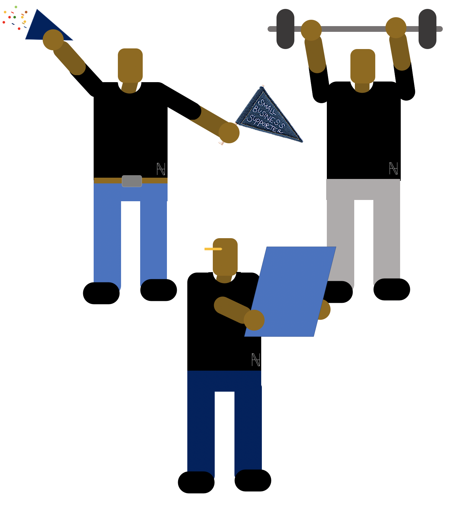

NahvNahv Shirts are shirts designed to be worn each and every way.
Inside out, back to front, does not matter.
This 100% cotton tee can be put on without a second of thought, and the no-fuss design enables it to be worn all and every day.
Focus on the important stuff.

Focus on going out, working out, and going
all out to make the future
Not how you dress.
Then when it is dirty simply put on a quick wash, dry and the cycle begins again!
Our aim, is to bring these high quality tees into ethical production and making them availible all over the world.
The first edition this shirt will come in one-size, unisex medium.
Chest: 39.5 inches,
Back length: 18 inches,
Sleeve: 11 inches,
Neck: 16 inches,
Waist: 32 inches,
Hip: 37 inches
Current Stage: Manufactoring
Intrested in stocking us?